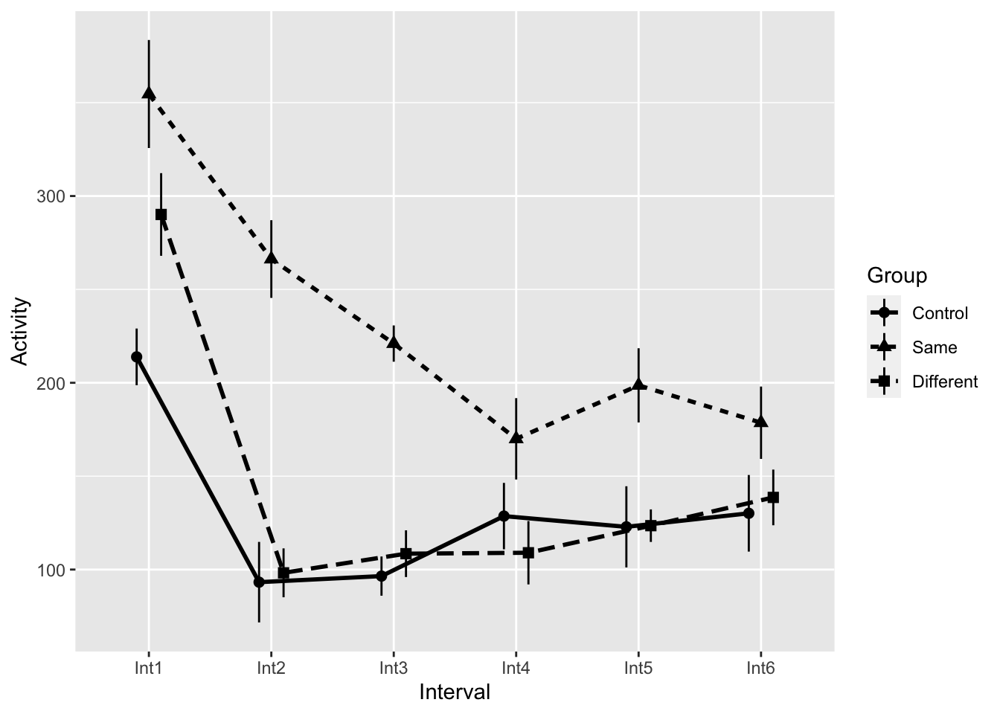
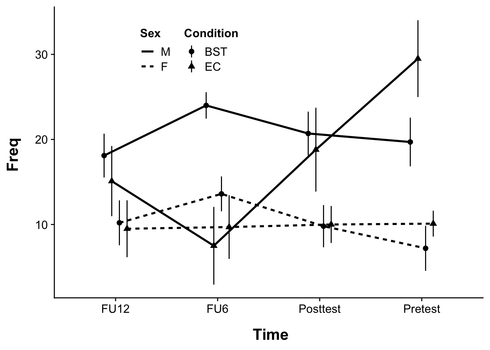
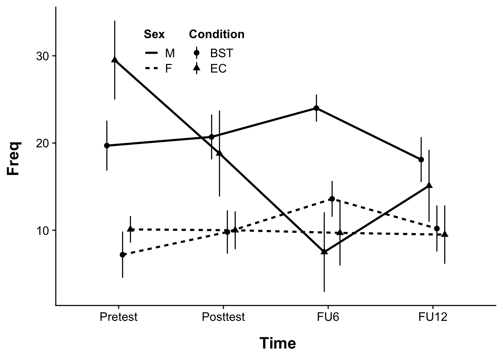
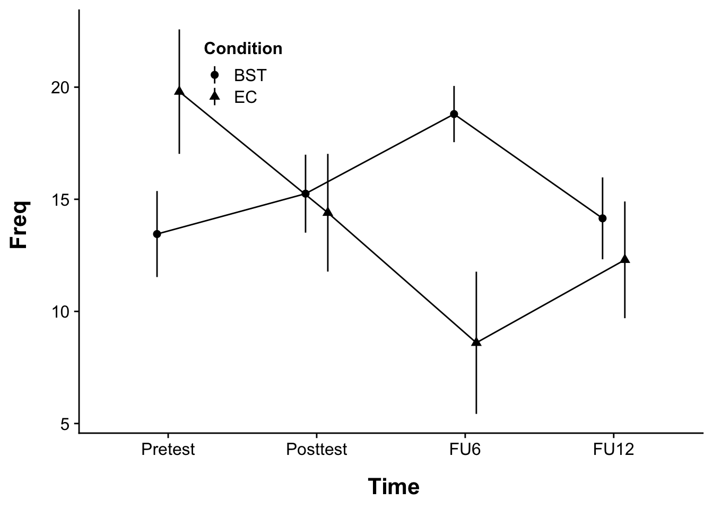

Mixed-effects ANOVA (BS + WS)
For our final trick with ANOVA, we will be covering mixed effects designs. Mixed models sometimes go by many names (mixed effects model, multi-level model, growth-curve models) depending on the structure of the data that is being analyzed. For this week we will be focusing on Mixed effects ANOVA.
This walk-though assumes the following packages:
TL;DR
- Mixed ANOVA involve both between-subjects factors and within-subjects factors
- Mixed ANOVA designs are more likely to give rise to sphericity violations
- In addition to testing for sphericity, we also need to test for homogeneity of covariance matrices (and subsequently homogeneity of variance)
- when considering simple effects and post-hoc tests, keep it
multivariate.
Example:
- loading in data
Rows: 24 Columns: 7
── Column specification ────────────────────────────────────────────────────────
Delimiter: "\t"
dbl (7): Group, Int1, Int2, Int3, Int4, Int5, Int6
ℹ Use `spec()` to retrieve the full column specification for this data.
ℹ Specify the column types or set `show_col_types = FALSE` to quiet this message.- data wrangling:
# create subject column
example <- example %>% mutate("SubjectID" = seq_along(example$Group))
# data in long format
example_long <- tidyr::pivot_longer(data = example,
names_to = "Interval",
values_to = "Activity",
col = contains("Int"))
# convert 'Interval' to factor:
example_long$Interval <- as.factor(example_long$Interval)
# Name the dummy variables for 'Group' & convert to factor:
example_long$Group <- recode_factor(example_long$Group,
"1" = "Control",
"2" = "Same",
"3" = "Different")Bypassing normality test and plotting…
- Box’s M test for homogeneity of covariance matrices
# Within Subjects dependent variables need to be in wide format
example_wide <- example_long %>% tidyr::pivot_wider(names_from = "Interval",
values_from = "Activity")
# box's M
# boxM(withinSubjects columns, betweenSubjects column)
heplots::boxM(example_wide[,3:8], example_wide$Group)
Box's M-test for Homogeneity of Covariance Matrices
data: example_wide[, 3:8]
Chi-Sq (approx.) = 44.272, df = 42, p-value = 0.376- Run the Anova
example_anova <- afex::aov_ez(id = "SubjectID",
dv = "Activity",
data = example_long,
between = "Group",
within = "Interval",
type = 3,
return = "afex_aov",
anova_table = list(es="pes",correction="GG"))Contrasts set to contr.sum for the following variables: GroupAnova Table (Type 3 tests)
Response: Activity
Effect df MSE F pes p.value
1 Group 2, 21 18320.10 7.80 ** .426 .003
2 Interval 3.28, 68.98 4076.58 29.85 *** .587 <.001
3 Group:Interval 6.57, 68.98 4076.58 3.02 ** .223 .009
---
Signif. codes: 0 '***' 0.001 '**' 0.01 '*' 0.05 '+' 0.1 ' ' 1
Sphericity correction method: GG - Test simple effects and post-hocs using
model=multivariate
Group = Control:
model term df1 df2 F.ratio p.value
Interval 5 21 6.045 0.0013
Group = Same:
model term df1 df2 F.ratio p.value
Interval 5 21 9.667 0.0001
Group = Different:
model term df1 df2 F.ratio p.value
Interval 5 21 13.786 <.0001Simple effects tests revealed significant effects for all three groups. Time for the post-hoc follow-ups:
$emmeans
Group = Control:
Interval emmean SE df lower.CL upper.CL
Int1 213.9 28.3 21 155.1 273
Int2 93.2 31.4 21 28.0 158
Int3 96.5 22.1 21 50.5 142
Int4 128.6 24.0 21 78.8 178
Int5 122.9 21.6 21 78.0 168
Int6 130.1 25.6 21 77.0 183
Group = Same:
Interval emmean SE df lower.CL upper.CL
Int1 354.6 28.3 21 295.9 413
Int2 266.2 31.4 21 201.0 331
Int3 221.0 22.1 21 175.0 267
Int4 170.0 24.0 21 120.1 220
Int5 198.6 21.6 21 153.8 243
Int6 178.6 25.6 21 125.5 232
Group = Different:
Interval emmean SE df lower.CL upper.CL
Int1 290.1 28.3 21 231.4 349
Int2 98.2 31.4 21 33.0 163
Int3 108.5 22.1 21 62.5 154
Int4 109.0 24.0 21 59.1 159
Int5 123.5 21.6 21 78.7 168
Int6 138.6 25.6 21 85.5 192
Confidence level used: 0.95
$contrasts
Group = Control:
contrast estimate SE df t.ratio p.value
Int1 - Int2 120.62 24.6 21 4.894 0.0010
Int1 - Int3 117.38 27.0 21 4.352 0.0033
Int1 - Int4 85.25 34.7 21 2.458 0.1820
Int1 - Int5 91.00 27.5 21 3.304 0.0346
Int1 - Int6 83.75 31.2 21 2.688 0.1199
Int2 - Int3 -3.25 20.7 21 -0.157 1.0000
Int2 - Int4 -35.38 30.7 21 -1.152 0.8538
Int2 - Int5 -29.62 26.9 21 -1.100 0.8757
Int2 - Int6 -36.88 27.4 21 -1.343 0.7584
Int3 - Int4 -32.12 19.7 21 -1.627 0.5912
Int3 - Int5 -26.38 20.3 21 -1.297 0.7832
Int3 - Int6 -33.62 17.8 21 -1.885 0.4374
Int4 - Int5 5.75 21.9 21 0.263 0.9998
Int4 - Int6 -1.50 21.4 21 -0.070 1.0000
Int5 - Int6 -7.25 29.5 21 -0.246 0.9999
Group = Same:
contrast estimate SE df t.ratio p.value
Int1 - Int2 88.38 24.6 21 3.586 0.0188
Int1 - Int3 133.62 27.0 21 4.954 0.0008
Int1 - Int4 184.62 34.7 21 5.322 0.0004
Int1 - Int5 156.00 27.5 21 5.663 0.0002
Int1 - Int6 176.00 31.2 21 5.648 0.0002
Int2 - Int3 45.25 20.7 21 2.191 0.2829
Int2 - Int4 96.25 30.7 21 3.135 0.0493
Int2 - Int5 67.62 26.9 21 2.512 0.1654
Int2 - Int6 87.62 27.4 21 3.192 0.0438
Int3 - Int4 51.00 19.7 21 2.582 0.1457
Int3 - Int5 22.38 20.3 21 1.101 0.8757
Int3 - Int6 42.38 17.8 21 2.376 0.2094
Int4 - Int5 -28.62 21.9 21 -1.310 0.7766
Int4 - Int6 -8.62 21.4 21 -0.403 0.9984
Int5 - Int6 20.00 29.5 21 0.678 0.9826
Group = Different:
contrast estimate SE df t.ratio p.value
Int1 - Int2 191.88 24.6 21 7.785 <.0001
Int1 - Int3 181.62 27.0 21 6.734 <.0001
Int1 - Int4 181.12 34.7 21 5.222 0.0004
Int1 - Int5 166.62 27.5 21 6.049 0.0001
Int1 - Int6 151.50 31.2 21 4.862 0.0010
Int2 - Int3 -10.25 20.7 21 -0.496 0.9958
Int2 - Int4 -10.75 30.7 21 -0.350 0.9992
Int2 - Int5 -25.25 26.9 21 -0.938 0.9319
Int2 - Int6 -40.38 27.4 21 -1.471 0.6853
Int3 - Int4 -0.50 19.7 21 -0.025 1.0000
Int3 - Int5 -15.00 20.3 21 -0.738 0.9747
Int3 - Int6 -30.12 17.8 21 -1.689 0.5531
Int4 - Int5 -14.50 21.9 21 -0.663 0.9841
Int4 - Int6 -29.62 21.4 21 -1.385 0.7351
Int5 - Int6 -15.12 29.5 21 -0.513 0.9951
P value adjustment: tukey method for comparing a family of 6 estimates Example 1:
In terms of new concepts, we are continuing our theme of “well, nothing terribly new being raised this week”. You’ve done between-subjects (BS) ANOVA, you’ve done within-subjects (WS) ANOVA, you’ve done simple linear regression… now we are simply combining what you know.
data import and wrangling
First we import the data. Here’s a little background:
King (1986) investigated motor activity in rats following injection of the drug midazolam. The first time that this drug is injected, it typically leads to a distinct decrease in motor activity. Like morphine, however, a tolerance for midazolam develops rapidly. King wished to know whether that acquired tolerance could be explained on the basis of a conditioned tolerance related to the physical context in which the drug was administered, as in Siegel’s work. He used three groups, collecting the crucial data (presented in the table below) on only the last day, which was the test day. During pretesting, two groups of animals were repeatedly injected with midazolam over several days, whereas the Control group was injected with physiological saline. On the test day, one group—the “Same” group—was injected with midazolam in the same environment in which it had earlier been injected. The “Different” group was also injected with midazolam, but in a different environment. Finally, the Control group was injected with midazolam for the first time. This Control group should thus show the typical initial response to the drug (decreased ambulatory behavior), whereas the Same group should show the normal tolerance effect—that is, they should decrease their activity little or not at all in response to the drug on the last trial. If King is correct, however, the Different group should respond similarly to the Control group, because although they have had several exposures to the drug, they are receiving it in a novel context and any conditioned tolerance that might have developed will not have the necessary cues required for its elicitation. The dependent variable in Table 14.4 is a measure of ambulatory behavior, in arbitrary units. Again, the first letter of the name of a variable is used as a subscript to indicate what set of means we are referring to. Because the drug is known to be metabolized over a period of approximately 1 hour, King recorded his data in 5-minute blocks, or Intervals. We would expect to see the effect of the drug increase for the first few intervals and then slowly taper off. Our analysis uses the first six blocks of data.
Rows: 24 Columns: 7
── Column specification ────────────────────────────────────────────────────────
Delimiter: "\t"
dbl (7): Group, Int1, Int2, Int3, Int4, Int5, Int6
ℹ Use `spec()` to retrieve the full column specification for this data.
ℹ Specify the column types or set `show_col_types = FALSE` to quiet this message.# A tibble: 24 × 7
Group Int1 Int2 Int3 Int4 Int5 Int6
<dbl> <dbl> <dbl> <dbl> <dbl> <dbl> <dbl>
1 1 150 44 71 59 132 74
2 1 335 270 156 160 118 230
3 1 149 52 91 115 43 154
4 1 159 31 127 212 71 224
5 1 159 0 35 75 71 34
6 1 292 125 184 246 225 170
7 1 297 187 66 96 209 74
8 1 170 37 42 66 114 81
9 2 346 175 177 192 239 140
10 2 426 329 236 76 102 232
# ℹ 14 more rowsThe data above is in wide format. I need to get it into long format before submitting it for further analysis. Before doing so, however, I also need to add a SubjectID to let R know which data belongs to which subject. If you are presented with repeated measures or within subjects data with no subject column, it’s easiest to create your SubjectID column BEFORE you pivot_longer() (conversely if you only have between subjects data then I would add your SubjectID after gathering:
# create subject column
# seq_along on Group ensures that every between participant gets a unique ID
example1 <- example1 %>% mutate("SubjectID" = seq_along(example1$Group))
# data is in wide format, needs to be long format for R,
# notice that I only need to collapse the "Interval" columns (2 through 7):
example1_long <- tidyr::pivot_longer(data = example1,
# get columns that contain "Int":
cols = contains("Int"),
names_to = "Interval",
values_to = "Activity")
# convert 'Interval' to factor:
example1_long$Interval <- as.factor(example1_long$Interval)
# Name the dummy variables for 'Group' & convert to factor:
example1_long$Group <- recode_factor(example1_long$Group,
"1" = "Control",
"2" = "Same",
"3" = "Different")
example1_long# A tibble: 144 × 4
Group SubjectID Interval Activity
<fct> <int> <fct> <dbl>
1 Control 1 Int1 150
2 Control 1 Int2 44
3 Control 1 Int3 71
4 Control 1 Int4 59
5 Control 1 Int5 132
6 Control 1 Int6 74
7 Control 2 Int1 335
8 Control 2 Int2 270
9 Control 2 Int3 156
10 Control 2 Int4 160
# ℹ 134 more rowstesting the homogeneity of covariances
Our assumptions tests have been pretty standard every week: tests for normality, tests for homogeneity of variance. Last week, with WS-ANOVA we introduced a new wrinkle, instead of explicitly testing for homogeneity of variance (as with BS-ANOVA), for WS-ANOVA we instead test for sphericity, which we described as “homogeneity of the sums of variances-covariances”. In last week’s lecture I walked thru an example of sphericity noting the properties of the variance / covariance matrix and in particular how to assess sphericity.
The sphericity assumption is tested for each WS-ANOVA independent variable with more than 2-levels. So if you have a 3 (e.g., Condition) × 3 (e.g., Time) Within Subject ANOVA, you will have two sphericity tests, one for independent variable “Condition” and another for “Time”. For the sake of example, for now lets just assume that you have the one WS-ANOVA independent variable, “Time”. The covariance matrix for Time would take the general form:
\[ \left[\begin{array}{cc} Var_1 & Cov_{12} & Cov_{13}\\ Cov_{12} & Var_2 & Cov_{23}\\ Cov_{13} & Cov_{23} & Var_3\\ \end{array}\right] \]
Now let’s consider if we have Time crossed with a between factor, “Group” with two levels. Typically for between factors we need to assess homogeneity of variance, and to a degree that remains true here. But at the same time (ha) each independent Group is confounded by “Time”. Or to think about it the reverse, the effect “Time” is nested in two independent Groups of people, and as such may play out differently within each group. As a result we need to assess the sphericity of “Time” within each of our two independent groups.
\[ Group A\left[\begin{array}{cc} Var_1 & Cov_{12} & Cov_{13}\\ Cov_{12} & Var_2 & Cov_{23}\\ Cov_{13} & Cov_{23} & Var_3\\ \end{array}\right] = GroupB\left[\begin{array}{cc} Var_1 & Cov_{12} & Cov_{13}\\ Cov_{12} & Var_2 & Cov_{23}\\ Cov_{13} & Cov_{23} & Var_3\\ \end{array}\right] \]
To address both of these considerations, we need to run a series of tests. Neither of these tests alone is a silver bullet, but taken together they should offer a window into whether we have any serious problems with our data.
Test 1: Box’s M
In his 1953 paper, Non-Normality And Tests On Variances George Box makes the declaration:
To make the preliminary test on variances is rather like putting to sea in a rowing boat to find out whether conditions are sufficiently calm for an ocean liner to leave port!
This reinforces our in class discussions about the robustness of ANOVA. Nonetheless, we should still test to get an impression of how far we are deviating from our assumptions. Here, we are testing for homogeneity of covariance matrices. To do so we will use Box’s (1949) M test (be sure to check the class website for a link to the original article). In short, the test compares the product of the log determinants of the separate covariance matrices to the log determinant of the pooled covariance matrix, analogous to a likelihood ratio test. See here for how determinants are calculated. The test statistic uses a chi-square approximation. This test can be found in the heplots package.
Running the boxM: getting the data in WIDE format?!?!?
Well, this is awkward. In order to test this assumption the data needs structured with the within variable in wide format… which is exactly the way that it was when we originally downloaded it. In order to go from long format to wide format we can use the pivot_wider() function (or in this case we could just use our original data frame).
In this case we want our dependent variable Activity to be spread across differing columns of Interval. The generic form of the pivot_wider() function is pivot_wider(names_from = "column that has IV names", values_from = "column that contains DV"). Based on our needs then:
example1_wide <- example1_long %>% pivot_wider(names_from = "Interval", values_from = "Activity")
example1_wide# A tibble: 24 × 8
Group SubjectID Int1 Int2 Int3 Int4 Int5 Int6
<fct> <int> <dbl> <dbl> <dbl> <dbl> <dbl> <dbl>
1 Control 1 150 44 71 59 132 74
2 Control 2 335 270 156 160 118 230
3 Control 3 149 52 91 115 43 154
4 Control 4 159 31 127 212 71 224
5 Control 5 159 0 35 75 71 34
6 Control 6 292 125 184 246 225 170
7 Control 7 297 187 66 96 209 74
8 Control 8 170 37 42 66 114 81
9 Same 9 346 175 177 192 239 140
10 Same 10 426 329 236 76 102 232
# ℹ 14 more rowsImportant note that we only pivot_wider() our within-subjects data. We DO NOT pivot_wider() the between subjects data. In this case, we leave Group alone!
example1_wide gets us back to where we started (sorry for running you in circles), but I wanted to show you how this is done in case you get your data in long format. Now that the data is in wide format, we can check for the homogeneity of covariance matrices using boxM.
Using the boxM test.
The call for the boxM takes two arguments
- the within-subject columns
- the between subject column
ws_columns <- example1_wide %>% select(contains("Int"))
bs_column <- example1_wide$Group
heplots::boxM(ws_columns,bs_column)
Box's M-test for Homogeneity of Covariance Matrices
data: ws_columns
Chi-Sq (approx.) = 44.272, df = 42, p-value = 0.376Note that we typically only concern ourselves with boxM if \(p\) < .001. Why so conservative you ask? Because boxM is typically underpowered for small samples and overly sensitive with larger sample sizes (Cohen, 2008). Then why use it, you may ask… ahh it’s just step 1 my young Padawan.
In either case these data look good.
Test 2: Our friend Levene (and its cousin Brown-Forsythe)
Let’s assume that we failed boxM, what the next step? We can run Levene’s Test for homogeneity of variance, or Brown-Forsythe if we have concerns about the normality of the data. Recall that both can be called from car::leveneTest() where Levene’s is mean centered and Brown-Forsythe is median centered. In this case we run separate tests on the between subjects Group and the BS × WS interaction, in this case Group * Interval.
Note that do do this we return to our data in long format.
Here I’ll run Brown-Forsythe
Levene's Test for Homogeneity of Variance (center = "median")
Df F value Pr(>F)
group 2 1.0099 0.3669
141 # Brown-Forsythe for Group * Interval interaction.
leveneTest(Activity~Group*Interval,data = example1_long, center="median")Levene's Test for Homogeneity of Variance (center = "median")
Df F value Pr(>F)
group 17 0.4772 0.9592
126 In this case we are particularly concerned with the outcome of the Group*Interval interaction. If this interaction had been significant (\(p\) < .05), coupled with a significant boxM (\(p\) < .001) then we would have cause for concern.
I’ll say it one more time with feeling—you should be concerned about your data if:
- the
boxMtest is significant (\(p\) < .001) AND - the Levene’s test of a model that crosses the BS variable * WS variable is significant (\(p\) < .05)
What to do if you violate both tests?
You shouldn’t run the mixed ANOVA. Instead:
- run separate WS-ANOVA for
Intervalon eachGroup - run a BS-ANOVA on
GroupcollapsingIntervalinto means (e.g., takemean(Int1,Int2, etc...)
This means that you do not test for between subjects interactions.
Wait?!??!?! What?!?!?
Well, technically you would not test between subjects interactions, but this might not be practical if the between subjects interaction is what you were most interested in. Better, just proceed with caution!!!
For the sake of example, assume that these data failed both tests. To run separate WS-ANOVA for interval for each group, we could use filter() from the tidyverse to isolate different groups. For example, to filter for Control and run the subsequent ANOVA
control_data <- example1_long %>% filter(Group=="Control")
afex::aov_ez(id = "SubjectID",
dv = "Activity",
data = control_data,
within = "Interval",
type = 3,
return = "afex_aov",
anova_table = list(es="pes",correction="none"))Anova Table (Type 3 tests)
Response: Activity
Effect df MSE F pes p.value
1 Interval 5, 35 2685.67 5.69 *** .449 <.001
---
Signif. codes: 0 '***' 0.001 '**' 0.01 '*' 0.05 '+' 0.1 ' ' 1That said, you can also use split() like so:
Running names(byGroup) reveals this object holds three groups named “Control”, “Same”, & “Different”.
Then we run each group separately, here’s Control again:
We could run BS-ANOVA on each interval using similar methods.
plotting the data
Now we can plot (not worrying about APA here). Given that interval is a within subjects variable we need to make the appropriate corrections to the error bars. For this we call on Morey (2008) recommendations and use the withinSummary() function from our helperFunctions:
# grabbing custom function
source("https://raw.githubusercontent.com/tehrandavis/graduate_statistics/main/custom_functions/withinSummary.R")
# creating a summary table
repdata <- withinSummary(data = example1_long,
measurevar = "Activity",
betweenvars = "Group",
withinvars = "Interval",
idvar = "SubjectID")
Attaching package: 'data.table'The following objects are masked from 'package:lubridate':
hour, isoweek, mday, minute, month, quarter, second, wday, week,
yday, yearThe following objects are masked from 'package:dplyr':
between, first, lastThe following object is masked from 'package:purrr':
transpose$Actual
Group Interval N Activity sd se ci
1 Control Int1 8 213.875 79.21118 28.00538 66.22220
2 Control Int2 8 93.250 93.27341 32.97713 77.97852
3 Control Int3 8 96.500 54.10308 19.12833 45.23130
4 Control Int4 8 128.625 70.31346 24.85956 58.78352
5 Control Int5 8 122.875 65.24117 23.06624 54.54299
6 Control Int6 8 130.125 74.54708 26.35637 62.32292
7 Same Int1 8 354.625 89.91415 31.78945 75.17011
8 Same Int2 8 266.250 109.68754 38.78040 91.70108
9 Same Int3 8 221.000 69.88153 24.70685 58.42242
10 Same Int4 8 170.000 78.10798 27.61534 65.29991
11 Same Int5 8 198.625 66.22243 23.41317 55.36334
12 Same Int6 8 178.625 83.59415 29.55500 69.88646
13 Different Int1 8 290.125 69.32210 24.50906 57.95473
14 Different Int2 8 98.250 53.47563 18.90649 44.70674
15 Different Int3 8 108.500 62.66236 22.15449 52.38704
16 Different Int4 8 109.000 52.52754 18.57129 43.91413
17 Different Int5 8 123.500 50.10275 17.71400 41.88695
18 Different Int6 8 138.625 56.01514 19.80434 46.82983
$Corrected
Group Interval N Activity ActivityNormed sd se ci
1 Control Int1 8 213.875 252.0208 42.93727 15.180619 35.89646
2 Control Int2 8 93.250 131.3958 60.97203 21.556867 50.97389
3 Control Int3 8 96.500 134.6458 29.69636 10.499249 24.82678
4 Control Int4 8 128.625 166.7708 50.29608 17.782348 42.04857
5 Control Int5 8 122.875 161.0208 61.46319 21.730519 51.38451
6 Control Int6 8 130.125 168.2708 57.99589 20.504645 48.48578
7 Different Int1 8 290.125 314.4792 62.57831 22.124775 52.31678
8 Different Int2 8 98.250 122.6042 37.02406 13.089982 30.95289
9 Different Int3 8 108.500 132.8542 35.38455 12.510329 29.58223
10 Different Int4 8 109.000 133.3542 47.96854 16.959440 40.10270
11 Different Int5 8 123.500 147.8542 24.64742 8.714178 20.60576
12 Different Int6 8 138.625 162.9792 42.17568 14.911355 35.25975
13 Same Int1 8 354.625 292.1250 81.80616 28.922844 68.39166
14 Same Int2 8 266.250 203.7500 58.83091 20.799867 49.18387
15 Same Int3 8 221.000 158.5000 27.46850 9.711581 22.96424
16 Same Int4 8 170.000 107.5000 61.61729 21.785000 51.51334
17 Same Int5 8 198.625 136.1250 56.19523 19.868015 46.98039
18 Same Int6 8 178.625 116.1250 54.79954 19.374564 45.81356This contains the means (Activity), normed means (ActivityNormed), and estimates of distribution for each Group × Interval Condition. The normed means are calculated by removing the between-subject variability. This is accomplished be ensuring that each participant have the same average (see this link for background and calculations link, Values of se, ci, and sd are then calculated on this normed data. For or resulting plot, we use the raw data for our means and the corrected sd, se, or ci for our error bars.
Using ggplot, this can be accomplished by using the data from our summary table repdata$Corrected and using direct calls instead of summary_stat:
# create universal position dodge
# this takes care of points, errorbars, and lines
dodge_all <- position_dodge(.3)
# now plot:
ggplot(data = repdata$Corrected,mapping = aes(x=Interval,
y=Activity,
group=Group)
) +
geom_pointrange(aes(shape=Group,
ymin=Activity-se,
ymax=Activity+se),
size=.5,
position = dodge_all) +
geom_line(aes(linetype=Group), size=1, position = dodge_all) Warning: Using `size` aesthetic for lines was deprecated in ggplot2 3.4.0.
ℹ Please use `linewidth` instead.
Now THESE are the error bars we’re looking for!
Remember however, when reporting the error values, you need to use the actual values and NOT the corrected ones from this plot. For this you would refer to the data in the repdata$Actual function.
Running our ANOVA:
Running the ANOVA in afex is same as before, we just specify BOTH within and between IVs:
ex1.aov <- afex::aov_ez(id = "SubjectID",
dv = "Activity",
data = example1_long,
between = "Group",
within = "Interval",
type = 3,
return = "afex_aov",
anova_table = list(es="pes",correction="GG"))Contrasts set to contr.sum for the following variables: GroupAnova Table (Type 3 tests)
Response: Activity
Effect df MSE F pes p.value
1 Group 2, 21 18320.10 7.80 ** .426 .003
2 Interval 3.28, 68.98 4076.58 29.85 *** .587 <.001
3 Group:Interval 6.57, 68.98 4076.58 3.02 ** .223 .009
---
Signif. codes: 0 '***' 0.001 '**' 0.01 '*' 0.05 '+' 0.1 ' ' 1
Sphericity correction method: GG
Univariate Type III Repeated-Measures ANOVA Assuming Sphericity
Sum Sq num Df Error SS den Df F value Pr(>F)
(Intercept) 4113798 1 384722 21 224.5511 1.097e-12 ***
Group 285815 2 384722 21 7.8006 0.002928 **
Interval 399737 5 281199 105 29.8524 < 2.2e-16 ***
Group:Interval 80820 10 281199 105 3.0178 0.002164 **
---
Signif. codes: 0 '***' 0.001 '**' 0.01 '*' 0.05 '.' 0.1 ' ' 1
Mauchly Tests for Sphericity
Test statistic p-value
Interval 0.21121 0.0088268
Group:Interval 0.21121 0.0088268
Greenhouse-Geisser and Huynh-Feldt Corrections
for Departure from Sphericity
GG eps Pr(>F[GG])
Interval 0.65694 4.469e-13 ***
Group:Interval 0.65694 0.009185 **
---
Signif. codes: 0 '***' 0.001 '**' 0.01 '*' 0.05 '.' 0.1 ' ' 1
HF eps Pr(>F[HF])
Interval 0.793258 2.449168e-15
Group:Interval 0.793258 5.142508e-03Note that sphericity has been violated. Indeed, mixed ANOVA designs are more likely to give rise to sphericity violations!! I therefore need to make the appropriate corrections for my ANOVA. In this case a simple re-run of the aov_ez setting correction="GG" should suffice.
simple effects
There are two ways that I can attack the interaction. I can take a look at Interval effects on the different levels of Group; or I can take a look at Group effects on the different levels of Interval. In the first scenario, I’m looking for within effects on a level of a between factor. In the second scenario, I’m looking for between effects (Group) on a level of a within factor (Interval). How my simple effects ANOVA nests my within and between factors has implications for how I do my follow-up.
by Group (repeated measures)
If I’m looking at a within effect, nested within a single level of a between factor (scenario 1), then I only need to run simple within-subjects ANOVAs for each between level that I’m interested in. So, for example if I’m interested in the effect of interval in all three groups, then I just run the separate within subjects ANOVA(s) and call it a day. This can be accomplished using emmeans. For clarity I’m going to rename ex1.aov from above and call it mixed.aov.
Now emmeans:
Group = Control:
model term df1 df2 F.ratio p.value
Interval 5 21 6.045 0.0013
Group = Same:
model term df1 df2 F.ratio p.value
Interval 5 21 9.667 0.0001
Group = Different:
model term df1 df2 F.ratio p.value
Interval 5 21 13.786 <.0001All three groups yielded a significant result. Time for some post-hoc analyses. Remember the top $emmeans give us the estimated means themselves and the $contrasts give us the p-values.
$emmeans
Group = Control:
Interval emmean SE df lower.CL upper.CL
Int1 213.9 28.3 21 155.1 273
Int2 93.2 31.4 21 28.0 158
Int3 96.5 22.1 21 50.5 142
Int4 128.6 24.0 21 78.8 178
Int5 122.9 21.6 21 78.0 168
Int6 130.1 25.6 21 77.0 183
Group = Same:
Interval emmean SE df lower.CL upper.CL
Int1 354.6 28.3 21 295.9 413
Int2 266.2 31.4 21 201.0 331
Int3 221.0 22.1 21 175.0 267
Int4 170.0 24.0 21 120.1 220
Int5 198.6 21.6 21 153.8 243
Int6 178.6 25.6 21 125.5 232
Group = Different:
Interval emmean SE df lower.CL upper.CL
Int1 290.1 28.3 21 231.4 349
Int2 98.2 31.4 21 33.0 163
Int3 108.5 22.1 21 62.5 154
Int4 109.0 24.0 21 59.1 159
Int5 123.5 21.6 21 78.7 168
Int6 138.6 25.6 21 85.5 192
Confidence level used: 0.95
$contrasts
Group = Control:
contrast estimate SE df t.ratio p.value
Int1 - Int2 120.62 24.6 21 4.894 0.0010
Int1 - Int3 117.38 27.0 21 4.352 0.0033
Int1 - Int4 85.25 34.7 21 2.458 0.1820
Int1 - Int5 91.00 27.5 21 3.304 0.0346
Int1 - Int6 83.75 31.2 21 2.688 0.1199
Int2 - Int3 -3.25 20.7 21 -0.157 1.0000
Int2 - Int4 -35.38 30.7 21 -1.152 0.8538
Int2 - Int5 -29.62 26.9 21 -1.100 0.8757
Int2 - Int6 -36.88 27.4 21 -1.343 0.7584
Int3 - Int4 -32.12 19.7 21 -1.627 0.5912
Int3 - Int5 -26.38 20.3 21 -1.297 0.7832
Int3 - Int6 -33.62 17.8 21 -1.885 0.4374
Int4 - Int5 5.75 21.9 21 0.263 0.9998
Int4 - Int6 -1.50 21.4 21 -0.070 1.0000
Int5 - Int6 -7.25 29.5 21 -0.246 0.9999
Group = Same:
contrast estimate SE df t.ratio p.value
Int1 - Int2 88.38 24.6 21 3.586 0.0188
Int1 - Int3 133.62 27.0 21 4.954 0.0008
Int1 - Int4 184.62 34.7 21 5.322 0.0004
Int1 - Int5 156.00 27.5 21 5.663 0.0002
Int1 - Int6 176.00 31.2 21 5.648 0.0002
Int2 - Int3 45.25 20.7 21 2.191 0.2829
Int2 - Int4 96.25 30.7 21 3.135 0.0493
Int2 - Int5 67.62 26.9 21 2.512 0.1654
Int2 - Int6 87.62 27.4 21 3.192 0.0438
Int3 - Int4 51.00 19.7 21 2.582 0.1457
Int3 - Int5 22.38 20.3 21 1.101 0.8757
Int3 - Int6 42.38 17.8 21 2.376 0.2094
Int4 - Int5 -28.62 21.9 21 -1.310 0.7766
Int4 - Int6 -8.62 21.4 21 -0.403 0.9984
Int5 - Int6 20.00 29.5 21 0.678 0.9826
Group = Different:
contrast estimate SE df t.ratio p.value
Int1 - Int2 191.88 24.6 21 7.785 <.0001
Int1 - Int3 181.62 27.0 21 6.734 <.0001
Int1 - Int4 181.12 34.7 21 5.222 0.0004
Int1 - Int5 166.62 27.5 21 6.049 0.0001
Int1 - Int6 151.50 31.2 21 4.862 0.0010
Int2 - Int3 -10.25 20.7 21 -0.496 0.9958
Int2 - Int4 -10.75 30.7 21 -0.350 0.9992
Int2 - Int5 -25.25 26.9 21 -0.938 0.9319
Int2 - Int6 -40.38 27.4 21 -1.471 0.6853
Int3 - Int4 -0.50 19.7 21 -0.025 1.0000
Int3 - Int5 -15.00 20.3 21 -0.738 0.9747
Int3 - Int6 -30.12 17.8 21 -1.689 0.5531
Int4 - Int5 -14.50 21.9 21 -0.663 0.9841
Int4 - Int6 -29.62 21.4 21 -1.385 0.7351
Int5 - Int6 -15.12 29.5 21 -0.513 0.9951
P value adjustment: tukey method for comparing a family of 6 estimates Example 2:
Ok, let’s ramp up our complexity here. This time we’re using data with 1 within factor and 2 between factors. For background on this data:
This is a study by St. Lawrence, Brasfield, Shirley, Jefferson, Alleyne, and O’Bannon (1995) on an intervention program to reduce the risk of HIV infection among African-American adolescents. The study involved a comparison of two approaches, one of which was a standard 2hour educational program used as a control condition (EC) and the other was an 8-week behavioral skills training program (BST). Subjects were Male and Female adolescents, and measures were taken at Pretest, Posttest, and 6 and 12 months follow-up (FU6 and FU12). There were multiple dependent variables in the study, but the one that we will consider is log(freq + 1), where freq is the frequency of condom-protected intercourse. 4 This is a 2 x 2 x 4 repeated-measures design, with Intervention and Sex as between-subjects factors and Time as the within-subjects factor.
data import and wrangling
example2 <- read_delim("https://www.uvm.edu/~statdhtx/methods8/DataFiles/Tab14-7.dat", delim = "\t")Warning: One or more parsing issues, call `problems()` on your data frame for details,
e.g.:
dat <- vroom(...)
problems(dat)Rows: 40 Columns: 7
── Column specification ────────────────────────────────────────────────────────
Delimiter: "\t"
chr (5): Person, Pretest, Posttest, FU6, FU12
dbl (2): Condition, Sex
ℹ Use `spec()` to retrieve the full column specification for this data.
ℹ Specify the column types or set `show_col_types = FALSE` to quiet this message.# A tibble: 40 × 7
Person Condition Sex Pretest Posttest FU6 FU12
<chr> <dbl> <dbl> <chr> <chr> <chr> <chr>
1 01 1 1 07 22 13 14
2 02 1 1 25 10 17 24
3 03 1 1 50 36 49 23
4 04 1 1 16 38 34 24
5 05 1 1 33 25 24 25
6 06 1 1 10 07 23 26
7 07 1 1 13 33 27 24
8 08 1 1 22 20 21 11
9 09 1 1 04 00 12 00
10 10 1 1 17 16 20 10
# ℹ 30 more rowsYou note that this time around, there is a subject ID, Person so no need to add that. From here we can gather the data (in columns 4-7) into long format with Time as the created factor:
and give names to our number-coded variables in Condition and Sex:
example2_long$Condition <- recode_factor(example2_long$Condition,
"1"="BST",
"2"="EC")
example2_long$Sex <- recode_factor(example2_long$Sex,
"1"="M",
"2"="F")
example2_long# A tibble: 160 × 5
Person Condition Sex Time Freq
<chr> <fct> <fct> <chr> <chr>
1 01 BST M Pretest 07
2 01 BST M Posttest 22
3 01 BST M FU6 13
4 01 BST M FU12 14
5 02 BST M Pretest 25
6 02 BST M Posttest 10
7 02 BST M FU6 17
8 02 BST M FU12 24
9 03 BST M Pretest 50
10 03 BST M Posttest 36
# ℹ 150 more rowsAlso, for some reason this data set wants to treat our Freq values as a character string. This was the case from the first import, but it’s much easier to wait and address it now (only a single column call). This is a strange quirk of this example dataset and may not apply in all cases:
plotting the data
First we need to create the data for the appropriate error bars
repdata <- withinSummary(data = example2_long,
measurevar = "Freq",
betweenvars = c("Condition","Sex"),
withinvars = "Time",
idvar = "Person")Automatically converting the following non-factors to factors: Time$Actual
Condition Sex Time N Freq sd se ci
1 BST M FU12 10 18.1 8.812239 2.786675 6.303896
2 BST M FU6 10 24.0 10.923980 3.454466 7.814544
3 BST M Posttest 10 20.7 12.728359 4.025060 9.105319
4 BST M Pretest 10 19.7 13.727912 4.341147 9.820356
5 BST F FU12 10 10.2 12.682446 4.010542 9.072476
6 BST F FU6 10 13.6 8.821690 2.789663 6.310657
7 BST F Posttest 10 9.8 8.978988 2.839405 6.423181
8 BST F Pretest 10 7.2 11.193252 3.539617 8.007170
9 EC M FU12 10 15.1 14.231811 4.500494 10.180824
10 EC M FU6 10 7.5 10.480140 3.314111 7.497040
11 EC M Posttest 10 18.8 23.757104 7.512656 16.994809
12 EC M Pretest 10 29.5 25.123031 7.944600 17.971933
13 EC F FU12 10 9.5 15.211472 4.810290 10.881632
14 EC F FU6 10 9.7 12.138552 3.838547 8.683397
15 EC F Posttest 10 10.0 13.063945 4.131182 9.345383
16 EC F Pretest 10 10.1 13.008117 4.113528 9.305446
$Corrected
Condition Sex Time N Freq FreqNormed sd se ci
1 BST F FU12 10 10.2 14.59375 8.346656 2.639444 5.970838
2 BST F FU6 10 13.6 17.99375 6.493872 2.053543 4.645436
3 BST F Posttest 10 9.8 14.19375 7.837706 2.478500 5.606757
4 BST F Pretest 10 7.2 11.59375 8.382080 2.650646 5.996179
5 BST M FU12 10 18.1 12.06875 8.148449 2.576766 5.829049
6 BST M FU6 10 24.0 17.96875 4.914548 1.554116 3.515656
7 BST M Posttest 10 20.7 14.66875 8.122956 2.568704 5.810812
8 BST M Pretest 10 19.7 13.66875 9.046229 2.860669 6.471282
9 EC F FU12 10 9.5 14.26875 10.573421 3.343609 7.563769
10 EC F FU6 10 9.7 14.46875 11.847996 3.746665 8.475545
11 EC F Posttest 10 10.0 14.76875 6.878644 2.175218 4.920685
12 EC F Pretest 10 10.1 14.86875 4.814042 1.522334 3.443758
13 EC M FU12 10 15.1 11.96875 13.049230 4.126529 9.334857
14 EC M FU6 10 7.5 4.36875 14.446869 4.568501 10.334668
15 EC M Posttest 10 18.8 15.66875 15.586111 4.928761 11.149632
16 EC M Pretest 10 29.5 26.36875 14.284445 4.517138 10.218476Now we can plot (let’s do some APA here):
# create universal position dodge
dodge_all <- position_dodge(.3)
# now plot:
p <- ggplot(data = repdata$Corrected,mapping = aes(x=Time,
y=Freq,
group=interaction(Condition,Sex))) +
geom_pointrange(aes(shape=Condition, ymin=Freq-se, ymax=Freq+se), size=.5, position = dodge_all) +
geom_line(aes(linetype=Sex), size=1, position = dodge_all) +
theme_cowplot() +
# aesthetics
theme(
axis.title = element_text(size = 16, face = "bold", lineheight = .55),
axis.text = element_text(size = 12),
legend.title = element_text(size = 12, face = "bold"),
legend.position = c(.20,.85)) +
scale_color_manual(values=c("black","grey50")) +
xlab("\n Time") +
ylab ("Freq \n") +
theme(plot.margin=unit(c(.1,.1,.1,.1),"in")) +
# stack legend boxes horizontally:
theme(legend.box = "horizontal")
show(p)
The order along the x-axis is the reverse of what I’d like. Since I’m plotting using repdata I need to change the order of my levels there. I can change this by:
and now re-plot (adjusting the position of my legend accordingly):
# create universal position dodge
dodge_all <- position_dodge(.3)
# now plot:
ggplot(data = repdata$Corrected,mapping = aes(x=Time,y=Freq,group=interaction(Condition,Sex))) +
geom_pointrange(aes(shape=Condition, ymin=Freq-se, ymax=Freq+se), size=.5, position = dodge_all) +
geom_line(aes(linetype=Sex), size=1, position = dodge_all) +
theme_cowplot() +
# APA ify
theme(
axis.title = element_text(size = 16, face = "bold", lineheight = .55),
axis.text = element_text(size = 12),
legend.title = element_text(size = 12, face = "bold"),
legend.position = c(.20,.85)) +
scale_color_manual(values=c("black","grey50")) +
xlab("\n Time") +
ylab ("Freq \n") +
theme(plot.margin=unit(c(.1,.1,.1,.1),"in")) +
# stack legend boxes horizontally:
theme(legend.box = "horizontal")
On to our assumptions tests!!
testing our assumptions
boxM
I could just use the original example2 object, but let’s spread for practice:
and now boxM. Since we have two between variables, we’ll need to run a separate test for each:
Box's M-test for Homogeneity of Covariance Matrices
data: example2_wide[, 4:7]
Chi-Sq (approx.) = 18.136, df = 10, p-value = 0.05271
Box's M-test for Homogeneity of Covariance Matrices
data: example2_wide[, 4:7]
Chi-Sq (approx.) = 17.018, df = 10, p-value = 0.07396In both cases we are fine (\(p\) > .001). Moving on to the ANOVA.
Run your omnibus ANOVA:
ex2.aov <- afex::aov_ez(id = "Person",dv = "Freq",data = example2_long,between = c("Sex", "Condition"), within = "Time",type = 3,return = "afex_aov",anova_table = list(es="pes",correction="GG"))Contrasts set to contr.sum for the following variables: Sex, ConditionWarning in summary.Anova.mlm(object$Anova, multivariate = FALSE): HF eps > 1
treated as 1
Univariate Type III Repeated-Measures ANOVA Assuming Sphericity
Sum Sq num Df Error SS den Df F value Pr(>F)
(Intercept) 34076 1 17961 36 68.2998 7.784e-10 ***
Sex 3358 1 17961 36 6.7306 0.013623 *
Condition 107 1 17961 36 0.2150 0.645687
Sex:Condition 64 1 17961 36 0.1278 0.722825
Time 274 3 11006 108 0.8965 0.445578
Sex:Time 780 3 11006 108 2.5511 0.059435 .
Condition:Time 1378 3 11006 108 4.5068 0.005097 **
Sex:Condition:Time 476 3 11006 108 1.5583 0.203741
---
Signif. codes: 0 '***' 0.001 '**' 0.01 '*' 0.05 '.' 0.1 ' ' 1
Mauchly Tests for Sphericity
Test statistic p-value
Time 0.90261 0.61479
Sex:Time 0.90261 0.61479
Condition:Time 0.90261 0.61479
Sex:Condition:Time 0.90261 0.61479
Greenhouse-Geisser and Huynh-Feldt Corrections
for Departure from Sphericity
GG eps Pr(>F[GG])
Time 0.93169 0.439966
Sex:Time 0.93169 0.063958 .
Condition:Time 0.93169 0.006289 **
Sex:Condition:Time 0.93169 0.206793
---
Signif. codes: 0 '***' 0.001 '**' 0.01 '*' 0.05 '.' 0.1 ' ' 1
HF eps Pr(>F[HF])
Time 1.018095 0.445577734
Sex:Time 1.018095 0.059434934
Condition:Time 1.018095 0.005097405
Sex:Condition:Time 1.018095 0.203741026Our Mauchly Tests for Sphericity pass, so no need to adjust our degrees of freedom.
And here we see a main effect for Sex and a Condition:Time interaction. Now to follow-up…
simple effects:
Similar to our first example there are two ways in which we can address that Interaction. We can look for simple (within) effects for Time on each of the between factors (Condition) that we are interested in, or we can look at simple between effects for Condition on each Time level of interest. To help guide this decision, let’s replot the data focusing on this interaction (removing Sex)
simpleData <- withinSummary(data = example2_long,
measurevar = "Freq",
betweenvars = "Condition",
withinvars = "Time",
id = "Person")Automatically converting the following non-factors to factors: Time# releveling and factoring
simpleData$Corrected$Time <- factor(simpleData$Corrected$Time,levels = c("Pretest","Posttest","FU6","FU12"))
ggplot(data = simpleData$Corrected,mapping = aes(x=Time,y=Freq,group=Condition)) +
geom_pointrange(aes(shape=Condition, ymin=Freq-se, ymax=Freq+se), size=.5, position = dodge_all) +
geom_line(position = dodge_all) +
theme_cowplot() +
# aesthetics
theme(
axis.title = element_text(size = 16, face = "bold", lineheight = .55),
axis.text = element_text(size = 12),
legend.title = element_text(size = 12, face = "bold"),
legend.position = c(.20,.85)) +
scale_color_manual(values=c("black","grey50")) +
xlab("\n Time") +
ylab ("Freq \n") +
theme(plot.margin=unit(c(.1,.1,.1,.1),"in")) +
# stack legend boxes horizontally:
theme(legend.box = "horizontal")
by condition (within nested in between):
Here we’re running a simple effects within ANOVA for Time on each level of Condition. Importantly, as Time is also nested within Sex, we need to also include Sex in our simple effects follow-ups. emmeans handles this for us:
Condition = BST:
model term df1 df2 F.ratio p.value
Sex 1 36 4.357 0.0440
Time 3 36 1.177 0.3322
Sex:Time 3 36 0.173 0.9140
Condition = EC:
model term df1 df2 F.ratio p.value
Sex 1 36 2.502 0.1225
Time 3 36 3.955 0.0155
Sex:Time 3 36 3.677 0.0208Our analysis of the BST group uncovers a simple main effect for Sex; this is in agreement with the result of our omnibus ANOVA. Simply, for the BST group, Sex matters.
Our result for the EC group yields a Sex × Time interaction. Again, we needed to include Sex in this simple effects ANOVA as Time was nested underneath it. That is, we cannot take into account our Time effects without understanding that they are confounded with Sex. This actually ends up being important here as the interaction tells us that in the EC group, Time matters more for one Sex than it does another. You could then tease apart this interaction as you would typically do in a repeated measures ANOVA.
Sex = M, Condition = BST:
model term df1 df2 F.ratio p.value
Time 3 36 0.704 0.5561
Sex = F, Condition = BST:
model term df1 df2 F.ratio p.value
Time 3 36 0.646 0.5906
Sex = M, Condition = EC:
model term df1 df2 F.ratio p.value
Time 3 36 7.627 0.0005
Sex = F, Condition = EC:
model term df1 df2 F.ratio p.value
Time 3 36 0.006 0.9994Here we only pay attention to instances where Condition = EC. We see that we have a significance effect for Time for men, but not for women. Now following that up:
$emmeans
Sex = M, Condition = BST:
Time emmean SE df lower.CL upper.CL
Pretest 19.7 5.28 36 8.9965 30.4
Posttest 20.7 4.94 36 10.6732 30.7
FU6 24.0 3.37 36 17.1649 30.8
FU12 18.1 4.10 36 9.7846 26.4
Sex = F, Condition = BST:
Time emmean SE df lower.CL upper.CL
Pretest 7.2 5.28 36 -3.5035 17.9
Posttest 9.8 4.94 36 -0.2268 19.8
FU6 13.6 3.37 36 6.7649 20.4
FU12 10.2 4.10 36 1.8846 18.5
Sex = M, Condition = EC:
Time emmean SE df lower.CL upper.CL
Pretest 29.5 5.28 36 18.7965 40.2
Posttest 18.8 4.94 36 8.7732 28.8
FU6 7.5 3.37 36 0.6649 14.3
FU12 15.1 4.10 36 6.7846 23.4
Sex = F, Condition = EC:
Time emmean SE df lower.CL upper.CL
Pretest 10.1 5.28 36 -0.6035 20.8
Posttest 10.0 4.94 36 -0.0268 20.0
FU6 9.7 3.37 36 2.8649 16.5
FU12 9.5 4.10 36 1.1846 17.8
Confidence level used: 0.95
$contrasts
Sex = M, Condition = BST:
contrast estimate SE df t.ratio p.value
Pretest - Posttest -1.0 3.99 36 -0.251 0.9944
Pretest - FU6 -4.3 4.68 36 -0.919 0.7948
Pretest - FU12 1.6 4.61 36 0.347 0.9854
Posttest - FU6 -3.3 4.75 36 -0.694 0.8986
Posttest - FU12 2.6 4.84 36 0.537 0.9494
FU6 - FU12 5.9 4.15 36 1.420 0.4952
Sex = F, Condition = BST:
contrast estimate SE df t.ratio p.value
Pretest - Posttest -2.6 3.99 36 -0.652 0.9140
Pretest - FU6 -6.4 4.68 36 -1.368 0.5270
Pretest - FU12 -3.0 4.61 36 -0.651 0.9146
Posttest - FU6 -3.8 4.75 36 -0.800 0.8542
Posttest - FU12 -0.4 4.84 36 -0.083 0.9998
FU6 - FU12 3.4 4.15 36 0.819 0.8453
Sex = M, Condition = EC:
contrast estimate SE df t.ratio p.value
Pretest - Posttest 10.7 3.99 36 2.685 0.0510
Pretest - FU6 22.0 4.68 36 4.703 0.0002
Pretest - FU12 14.4 4.61 36 3.124 0.0177
Posttest - FU6 11.3 4.75 36 2.378 0.0998
Posttest - FU12 3.7 4.84 36 0.764 0.8698
FU6 - FU12 -7.6 4.15 36 -1.830 0.2764
Sex = F, Condition = EC:
contrast estimate SE df t.ratio p.value
Pretest - Posttest 0.1 3.99 36 0.025 1.0000
Pretest - FU6 0.4 4.68 36 0.086 0.9998
Pretest - FU12 0.6 4.61 36 0.130 0.9992
Posttest - FU6 0.3 4.75 36 0.063 0.9999
Posttest - FU12 0.5 4.84 36 0.103 0.9996
FU6 - FU12 0.2 4.15 36 0.048 1.0000
P value adjustment: tukey method for comparing a family of 4 estimates A ton of output here, but we are only concerned with Sex = M, Condition = EC.
by Time (between nested in within):
Now to look at the alternative, our Condition effects on each level of Time. We can either run this using joint_tests() or because Condition only has two levels we can do multiple pairwise comparisons using emmeans().
Here’s the joint_tests output:
Time = Pretest:
model term df1 df2 F.ratio p.value
Sex 1 36 9.134 0.0046
Condition 1 36 1.448 0.2368
Sex:Condition 1 36 0.427 0.5175
Time = Posttest:
model term df1 df2 F.ratio p.value
Sex 1 36 3.969 0.0540
Condition 1 36 0.030 0.8645
Sex:Condition 1 36 0.045 0.8330
Time = FU6:
model term df1 df2 F.ratio p.value
Sex 1 36 1.480 0.2317
Condition 1 36 9.160 0.0045
Sex:Condition 1 36 3.494 0.0697
Time = FU12:
model term df1 df2 F.ratio p.value
Sex 1 36 2.710 0.1084
Condition 1 36 0.204 0.6545
Sex:Condition 1 36 0.079 0.7807Here’s the emmeans output:
$emmeans
Time = Pretest:
Condition emmean SE df lower.CL upper.CL
BST 13.4 3.73 36 5.88 21.0
EC 19.8 3.73 36 12.23 27.4
Time = Posttest:
Condition emmean SE df lower.CL upper.CL
BST 15.2 3.50 36 8.16 22.3
EC 14.4 3.50 36 7.31 21.5
Time = FU6:
Condition emmean SE df lower.CL upper.CL
BST 18.8 2.38 36 13.97 23.6
EC 8.6 2.38 36 3.77 13.4
Time = FU12:
Condition emmean SE df lower.CL upper.CL
BST 14.2 2.90 36 8.27 20.0
EC 12.3 2.90 36 6.42 18.2
Results are averaged over the levels of: Sex
Confidence level used: 0.95
$contrasts
Time = Pretest:
contrast estimate SE df t.ratio p.value
BST - EC -6.35 5.28 36 -1.203 0.2368
Time = Posttest:
contrast estimate SE df t.ratio p.value
BST - EC 0.85 4.94 36 0.172 0.8645
Time = FU6:
contrast estimate SE df t.ratio p.value
BST - EC 10.20 3.37 36 3.027 0.0045
Time = FU12:
contrast estimate SE df t.ratio p.value
BST - EC 1.85 4.10 36 0.451 0.6545
Results are averaged over the levels of: Sex The results revealed a significant effect for Sex on the Pretest Time condition. More importantly in terms of our interaction, they revealed a significant effect for Condition only on the FU6 Time condition.
to pool or not to pool, this is the yada yada yada
At this point you may have a few questions regarding simple effects ANOVA. In particular, the question of when and whether to pool your variances (i.e., use the error from the omnibus ANOVA) or not. If you want the short answer on my recommendation, here you go:
Only pool variances (model="univariate") if you are running a Between Subjects ANOVA, assuming homogeneity of variances has not been violated. That’s it. Any other designs use the error terms associated with the specific tests that you are running (model="multivariate"). This is the least risky way of performing your follow-up analysis. I realize we lose power this way, but sorry, that sucks… its a consequence of the design you choose. My feeling, better to be more conservative. That said, for what its worth, you already GAINED a bit of power by choosing a within-subjects design in the first place!
Why this recommendation? In any design that has a within-subject factor we are almost guaranteed to see some deviations in compound symmetry (and sphericity). In fact, the entire point of the analysis is to account for this. Put another way, the within-subjects ANOVA relaxes the homogeneity assumption, AND implicitly concedes that when conducting your within-subject simple effects follow-ups that you are not granted that variances are similar from one level to the next. So, in within-subjects designs the recommendation is to NOT pool your variances, see Boik (1981).
This goes for post-hocs as well.
One of these days I’ll get around to developing simulations to help elucidate why this is an issue. But for now… keep it multivariate.